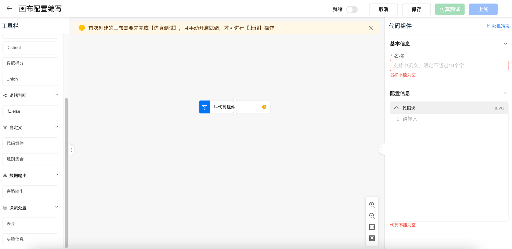
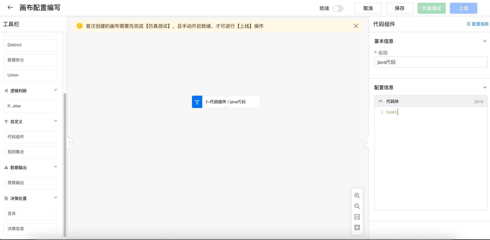

|
【入口】
Zeus-->策略部署-->画布
【基础配置】
- 点击右上角「新建画布」，在弹框中按要求填写完成「画布中文名称」和「画布英文名称」并保存后，自动跳转到画布配置页面；
- 左侧为工具栏，涵盖画布配置所需的所有支持的组件；
-
将代码组件组件拖拽到画布中央，点击组件，右侧出现组件基本信息配置模块：
-
基本信息：
- 名称：支持中英文，不超过10个字，填写后画布中央的组件名称会变更，必填
-
配置信息：
- 可直接在代码块中填写java代码，在整个画布配置完成后，会对代码进行校验，非必填
-
如果要实现“一进一出”的逻辑，则继承抽象类IProcessor，并实现process方法。
如果要实现“一进多出”的逻辑，则继承抽象类IFlatProcessor，并实现flatProcess方法。
抽象类所在包为：
<dependency>
<groupId>com.meituan.rc.zeus</groupId>
<artifactId>zeus-dynamic-script</artifactId>
<version>1.1.6-nearline</version>
</dependency>
可以在本地引入上述依赖包并进行代码编写，正式配置时需要把类中所有代码(包括包名粘贴到代码块中)
-
process方法入参为传入该组件的上下文，出参为经过该组件处理后的上下文。
flatProcess方法入参为传入该组件的上下文，出参为经过该组件处理后的多条上下文。
-
demo：
package com.meituan.rc.zeus.nearline.flink;
import com.meituan.rc.zeus.dynamic.script.runtime.IProcessor;
import java.util.Map;
public class DemoProcessor extends IProcessor {
@Override
public Map<String, Object> process(Map<String, Object> map) {
String firstName = String.valueOf(map.get("firstName")); //从原始上下文中获取firstName字段并转为字符串型
String lastName = String.valueOf(map.get("lastName")); //从原始上下文中获取lastName字段并转为字符串型
map.put("fullName", firstName + " " + lastName); //将firstName和lastName拼接赋值给fullName
return map; //将上下文返回
}
}
package com.meituan.rc.zeus.nearline.flink;
import com.google.common.collect.Lists;
import com.meituan.rc.zeus.dynamic.script.runtime.IFlatProcessor;
import org.apache.curator.shaded.com.google.common.collect.Maps;
import java.util.List;
import java.util.Map;
public class DemoFlatProcessor extends IFlatProcessor {
@Override
public List<Map<String, Object>> flatProcess(Map<String, Object> map) {
List<Map<String,Object>> resultList = Lists.newArrayList();
for (int i = 0; i < 3; i ++) {
resultList.add(Maps.newHashMap(map));
}
return resultList;
}
}
|


|